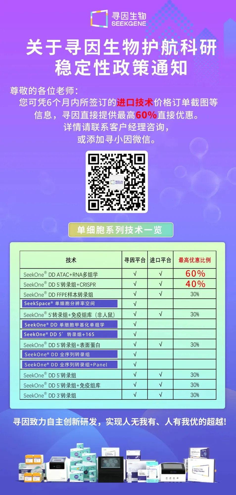

关税风波下，国产单细胞/空转平台能顶上吗？
原文：https://mp.weixin.qq.com/s?__biz=MzAwMzIzOTk5OQ==&mid=2247528420&idx=1&sn=9d8831d1112eb2ba6a5bca9cfb0fdce3&chksm=9b3c16b4ac4b9fa24cad81553adede393ecd250d71e46085c36acd23b4e1a244bfe54137eac6#rd 合集：漫谈胡侃
01
没有硝烟的战争
NIH已明确限制国人对部分数据集和站点的访问，所谓的对等"关税"也已生效。一场没有硝烟的战争已经打响。早期的单细胞与空转数据无疑是外企和进口试剂/平台的天下，“那个公司”占据了大部分的份额，而它的总部正是在美国。额外的关税很可能带来试剂价格上涨，最近我的朋友圈和聊天框也都被各厂商试剂即将涨价的消息刷屏。是挑战也是机遇，现在单细胞/空转国产平台的性能不输进口，更多的资金留给国产份额也能够更好的促进国产技术迭代。
02
国产平台

END